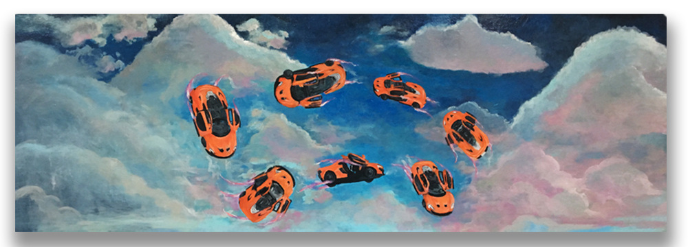
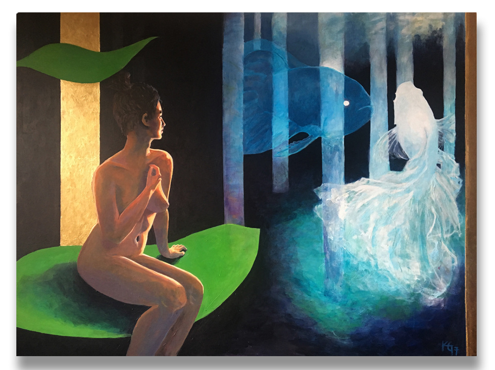
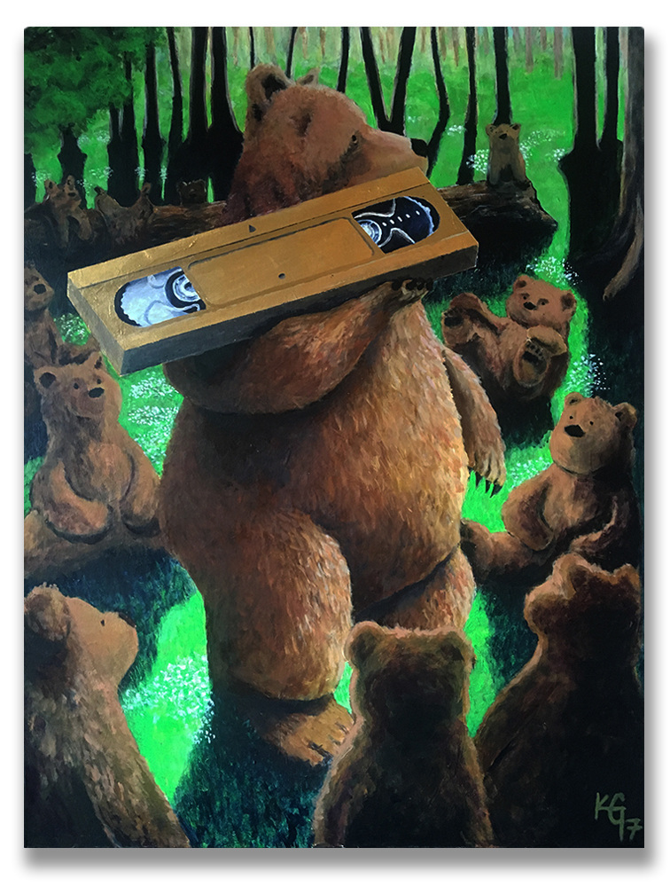
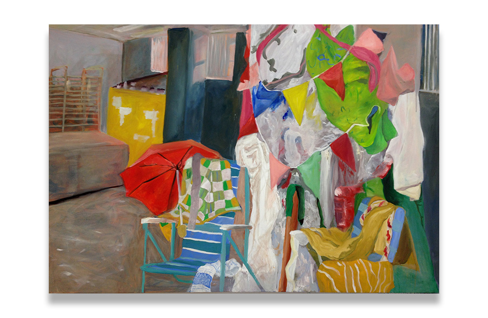
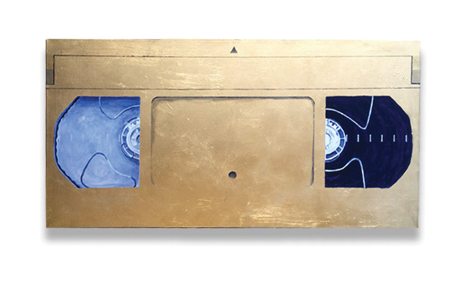
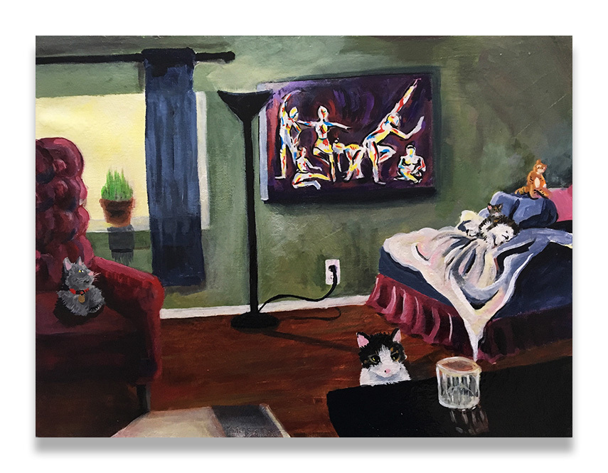

Art Museum
All works are on canvas or board using acrylic, watercolor, or oil. Photographed or rescanned recently with digital retouching limited to color correction and adding drop shadows.

Abstract Landscape
Acrylic on canvas, 2018

Organic Forms
Oil on canvas, 2019

Color Study in Blue
Acrylic on canvas, 2020

Gestural Composition
Acrylic on board, 2019

Urban Abstraction
Mixed media on canvas, 2021

Chromatic Flow
Acrylic on canvas, 2022
This collection represents a selection of personal works created between 2018 and 2022. Each piece explores relationships between color, form, and texture while drawing inspiration from both urban and natural environments.
- Works created 2018–2022
- Digitally photographed and retouched
- Curated selection posted online
- Works exhibited locally